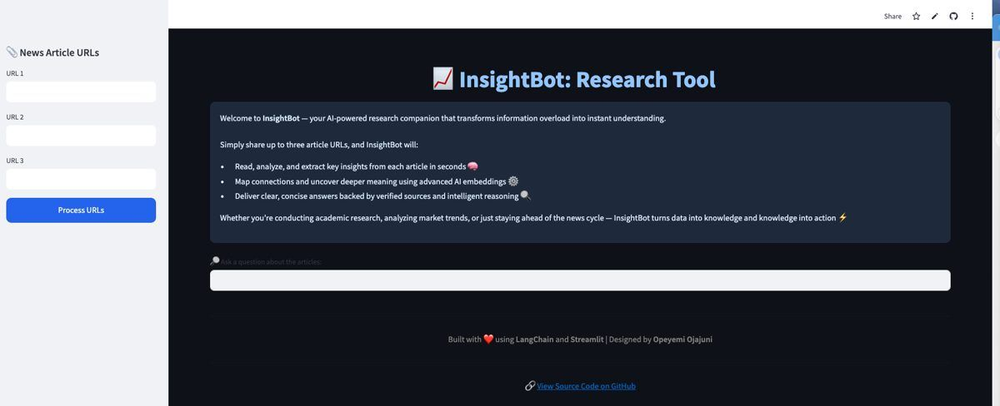

ML & data science
Forecasting, classification and experiment design in Python and SQL, with uncertainty reported, not hidden.
I design, stress-test and evaluate AI systems for high-stakes work — from protocol-grounded decision support to immersive training — and I measure whether they actually help the people using them.
Open to Applied Scientist, Research Scientist, Data Scientist and ML Engineer roles · US or remote
NOWThreat-modelling the four agents in the Cyber Drill · October 2026

Every tag shows how far the evidence goes:
Forecasting, classification and experiment design in Python and SQL, with uncertainty reported, not hidden.
Retrieval-grounded assistants and tool-using agents that cite sources and ask a human before changing anything important.
Controlled studies, cognitive measurement and survey validation — eight years of finding out what really changes people’s performance.
Unity, Meta Quest and CAVE environments that recreate high-stakes situations safely — for training and for testing AI.
Also: network & security engineering (2015–2018) · federated learning for vehicle security · MBA in progress
Most teams stop after building. The failures that matter in emergency response, security and training show up in the last two steps.

Immersive scenarios built on a university emergency response plan: incident command, EOC activation and branching decisions. Used in professional training, outreach and summer camps.

Data Scientist intern, 2023. Wrangled 1M+ logistics and transactional records and built capacity-forecasting models with quantified uncertainty to inform capital-investment planning.

Mobility-aware federated learning benchmarked against four baselines: 0.92 malicious recall on a frozen 199,663-sample test set — and a false-positive rate I report as the blocker to deployment.

Retrieval-augmented Q&A over research pages, answering with links back to the passages it used. Used by a research team.
I spent eight years measuring how people think and learn inside immersive systems. Now I apply that rigor to AI systems — especially agents — so the teams deploying them know what works before it matters.
Postdoctoral Research Manager, SU XR Jags Lab · PhD, Science & Mathematics · former Data Scientist intern, Amazon · MBA in progress
I’m looking for applied science, research science, data science and ML roles where building, securing and evaluating AI systems is one job. Happy to talk about a role, a study or a collaboration.
I usually reply within 2 working days.